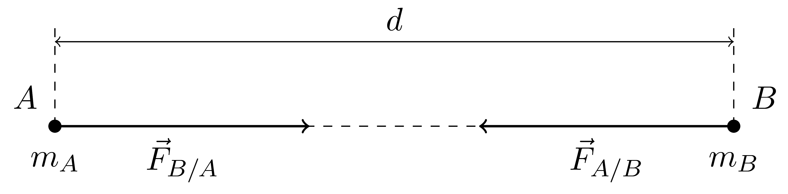
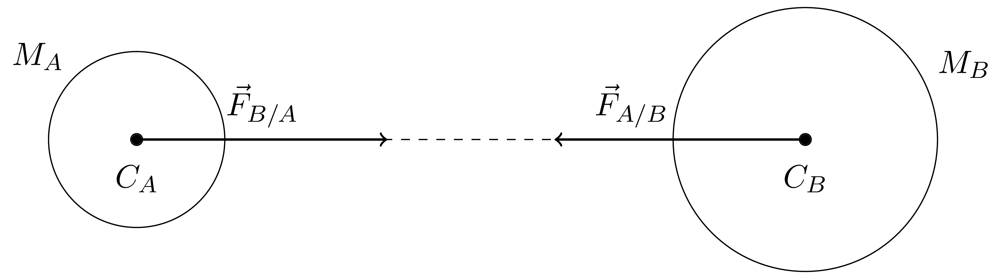
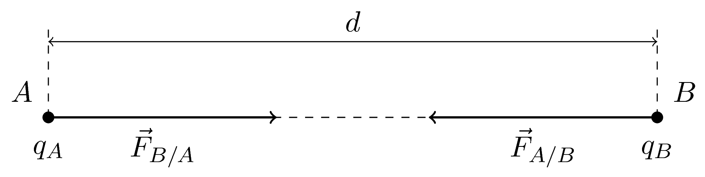
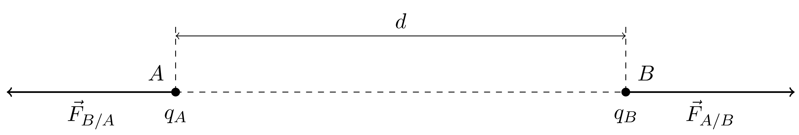
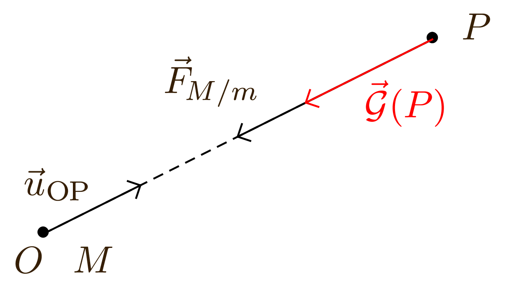
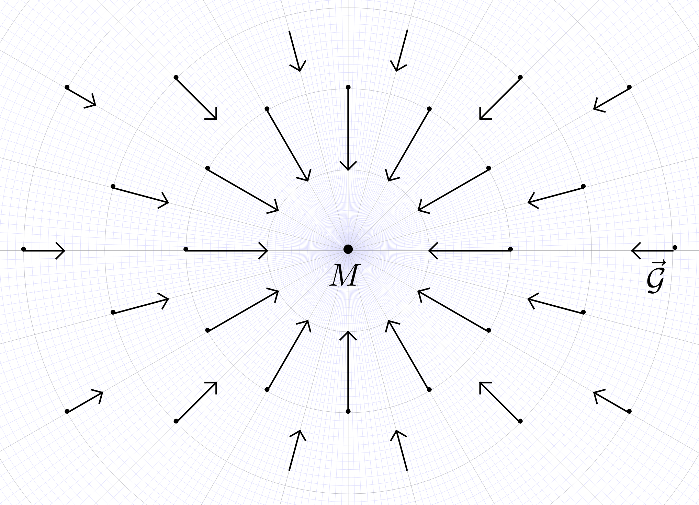
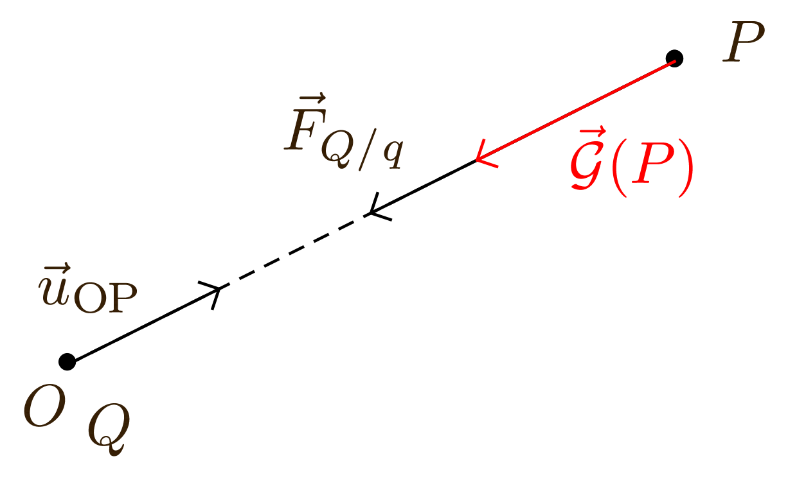
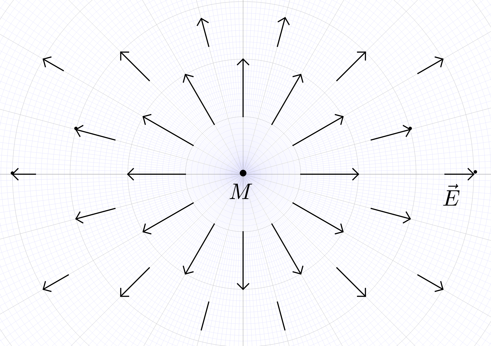
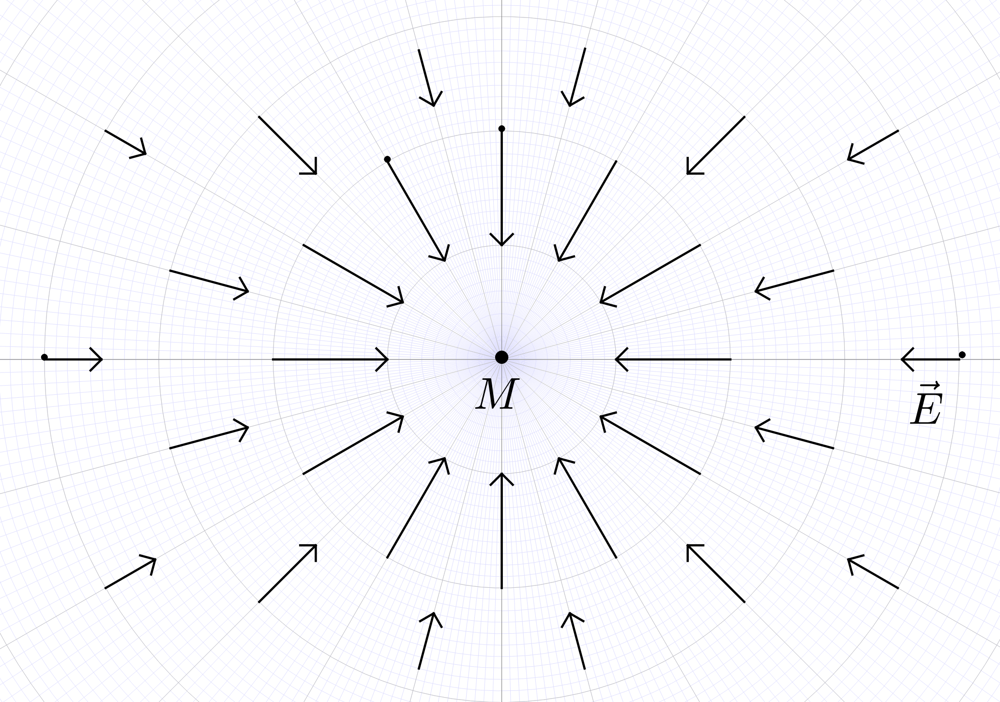
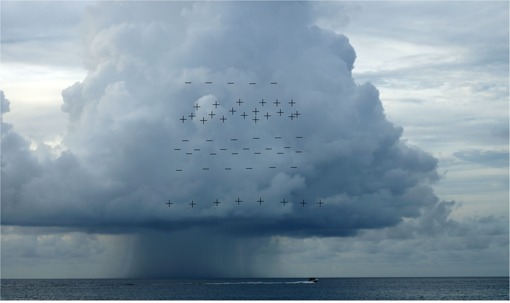

La matière à différentes échelles
Les ordres de grandeurs de différentes grandeurs de même nature permettent de les comparer rapidement.
Quelques ordres de grandeur
-
Rayon moyen d’un noyau : $\pu{10^{-15} m}$ ;
-
Rayon moyen d’un atome : $\pu{10^{-10} m}$ ;
-
Longueur moyenne d’une bactérie : $\pu{10^{- 6} m}$ ;
-
Taille d’un être humain : $\pu{1 m}$ ;
-
Rayon de la Terre : $\pu{10^7 m}$ ;
-
Diamètre de la Voie Lactée : $\pu{10^{21} m}$.
Détermination d’un ordre de grandeur
-
Écriture de la valeur en notation scientifique : $$a \times 10^n \qquad \text{avec} \qquad 1 \le a < 10$$
-
Détermination de la puissance de 10 : $$ \begin{cases} a < 5 & \text{l’ordre de grandeur est } 10^n \cr a \geqslant 5 & \text{l’ordre de grandeur est } 10^{n + 1} \end{cases} $$
Exemples
- Le rayon de l’atome d’hydrogène vaut $r = \pu{53 pm}$. Donner son ordre de grandeur.
Réponse
$r = \pu{53 pm} = \pu{5,3e-11 m} \approx \pu{10^{- $10} m}$
- Le diamètre d’une molécule d’ADN vaut $d = \pu{2 nm}$. Donner son ordre de grandeur.
Réponse
$d = \pu{2 nm} = \pu{2e-9 m} \approx \pu{10^{-9} m}$.
- La longueur d’une molécule d’ADN dépliée vaut $l = \pu{2 m}$. Donner son ordre de grandeur.
Réponse
$l = \pu{2 m} \approx \pu{1}{m}$.
Charge élémentaire
- La charge électrique élémentaire est notée $e$ et a pour valeur, en coulomb, $$ e = \pu{1,602176565(35)}\cdot\pu{10^{-19} C} $$
- Depuis sa première mesure par Robert Millikan en 1909, la charge élémentaire est considérée comme indivisible. Toute charge électrique $Q$ peut donc s’écrire : $$ Q = n\, e $$ où $n$ est un nombre entier relatif.
- La charge élémentaire est la charge électrique d’un proton. C’est aussi l’opposé de la charge électrique d’un électron.
Interactions fondamentales
Quatre interactions fondamentales sont responsables de tous les phénomènes physiques observés dans l’Univers :
-
l’interaction nucléaire forte ;
-
l’interaction nucléaire faible ;
-
l’interaction gravitationnelle ;
-
l’interaction électromagnétique.
Interaction gravitationnelle
-
L’interaction gravitationnelle concerne les masses, immobiles et/ou en mouvement. Elle fait intervenir un champ gravitationnel (cf. section 3).
-
L’interaction gravitationnelle est toujours attractive.
-
La loi de Newton modélise l’interaction gravitationnelle sous forme d’une force : la force de Newton.
La loi de Newton
L’interaction gravitationnelle entre deux corps ponctuels $A$ et $B$, de masses respectives $m_A$ et $m_B$, séparés d’une distance $d$, est modélisée par des forces $\vec{F}_{A / B}$ et $\vec{F}_{B / A}$ dont les caractéristiques sont les suivantes :
-
Point d’application : $A$ pour $\vec{F}_{B / A}$ et $B$ pour $\vec{F}_{A / B}$
-
la direction de la droite $(AB)$
-
vers le centre attracteur ($A$ pour $\vec{F}_{A / B}$ et $B$ pour $\vec{F}_{B / A}$)
-
Valeur : $$ F_{A / B} = F_{B / A} = G \, \dfrac{m_A \cdot m_B}{d^2} $$ où $m_A$ et $m_B$ sont exprimées en kilogramme (kg), $d$ en mètre (m) et $F_{A / B}$ et $F_{B / A}$ en newton (N).
$G$ est appelée constante de gravitation universelle, sa valeur est : $$G = \pu{6,67e-11 N.m2.kg-2}$$
-
Si l’on ne prend pas en compte les points d’application des deux vecteurs, on constate que : $$\vec{F}_{A / B} = - \vec{F}_{B / A}$$
Représentation des forces
-
Si l’on ne prend pas en compte les points d’application des deux vecteurs, on constate que : $$\vec{F}_{A / B} = - \vec{F}_{B / A}$$
-
La loi de Newton se généralise telle quelle à des corps à répartition de masse sphérique : 
À retenir
L’interaction gravitationnelle est toujours attractive et de portée infinie.
L’interaction gravitationnelle possède la plus faible intensité parmi toutes les interactions : $10^{38}$ fois plus petite que celle l’interaction nucléaire forte.
Interaction électromagnétique
-
L’interaction électromagnétique concerne les charges électriques, immobiles et/ou en mouvement. Elle fait intervenir des champ électrique et magnétique.
-
L’interaction électromagnétique peut être attractive ou répulsive selon les cas.
-
La loi de Coulomb modélise la seule interaction électrique sous forme d’une force : la force électrique.
La loi de Coulomb
L’interaction électrique entre deux corps ponctuels $A$ et $B$, portant les charges respectives $q_A$ et $q_B$, séparés d’une distance $d$, est modélisée par des forces $\vec{F}_{A / B}$ et $\vec{F}_{B / A}$ dont les caractéristiques sont les suivantes :
-
Point d’application : $A$ pour $\vec{F}_{B / A}$ et $B$ pour $\vec{F}_{A / B}$
-
Direction : la droite $(AB)$
-
Sens : dépend du signe des deux charges électriques
-
Valeur : $$ F_{A / B} = F_{B / A} = k \, \dfrac{|q_A | \cdot |q_B|}{d^2} $$ où $q_A$ et $q_B$ sont exprimées en coulomb (C), $d$ en mètre (m) et $F_{A / B}$ et $F_{B / A}$ en newton (N). $$k = \pu{9,0e9 N.m2.C-2}$$
Représentation des forces
-
Charges de signes opposés : l’interaction est attractive : 
-
Charges de mêmes signes, l’interaction est répulsive : 
-
Si l’on ne prend pas en compte les points d’application des deux vecteurs, on constate que : $$\vec{F}_{A / B} = - \vec{F}_{B / A}$$
-
La loi de Coulomb se généralise telle quelle à des corps à répartition de masse sphérique (cf. section 3.1).
À retenir
L’interaction électrique entre deux corps est de portée infinie. Si les charges électriques sont de même signe, elle est répulsive, si les charges électriques sont de signes opposés, elle est attractive.
L’intensité de l’interaction électrique est environ $10^2$ fois plus petite que celle de l’interaction forte.
Interaction forte
L’interaction forte possède les propriétés suivantes :
-
Elle est attractive ;
-
Elle est responsable de la cohésion des nucléons (en fait de toutes les particules de la famille des hadrons) ;
-
Elle est donc responsable, indirectement, de la cohesion des noyaux atomiques ;
-
Elle possède une portée de l’ordre de $\pu{10^{-15} m}$ ;
-
Elle est la plus puissante de toutes les interactions connues.
Interaction faible
L’interaction faible possède les caractéristiques suivantes :
-
Elle est responsable d’un des types de radioactivité, la radioactivité $\beta$. Elle joue aussi un rôle important dans la fusion nucléaire (comme au centre du Soleil) ;
-
Elle possède une portée de l’ordre de $\pu{10^{-17} m}$ ;
-
Elle est $10^{-5}$ fois moins intense que l’interaction forte.
Domaines de prédominance des différentes interactions
À l’échelle astronomique
À l’échelle astronomique, la matière est globalement neutre alors que les masses sont gigantesques :
- L’interaction gravitationnelle prédomine à l’échelle astronomique.
De l’échelle microscopique à l’échelle humaine
De l’échelle microscopique à l’échelle humaine, les masses sont trop petites pour que l’interaction gravitationnelle soit importante. De plus, localement, les charges électriques ne se compensent pas :
- L’interaction électromagnétique prédomine de l’échelle microscopique à l’échelle humaine.
À l’échelle du noyau
Dans le noyau, les interactions forte, faible et électromagnétique sont présentes. L’interaction électromagnétique tend à rendre les noyaux instables alors que l’interaction forte, 100 fois plus intense, tend à les stabiliser.
-
Les interactions forte et faible prédominent à l’échelle des noyaux (pas trop gros).
-
La stabilité d’un noyau est le résultat de la compétition qui existe entre l’interaction forte et l’interaction électromagnétique.
Notion de champ
Champ en physique
En physique, un champ est la donnée, pour chaque point de l’espace, de la valeur d’une grandeur physique.
Cette grandeur physique peut être scalaire, c’est à dire un nombre, (température, pression, etc.) ou vectorielle (vitesse des particules d’un fluide, champ électrique, etc.).
-
Un exemple de champ scalaire est donné par la carte des températures d’un bulletin météorologique : la température atmosphérique prend, en chaque point, une valeur particulière.
-
Un exemple de champ vectoriel est donné par la carte des vents d’un bulletin météorologique : les particules de fluides possèdent, en chaque point, un vecteur vitesse caractérisé par une direction, un sens et une valeur.
Champ gravitationnel $\vec{\mathcal{G}}$
Considérons, en un point $O$ de l’espace, un objet ponctuel de masse $M$ et, en un point $P$, un objet ponctuel de masse $m$. La force gravitationnelle exercée par la masse $M$ sur la masse $m$ s’écrit : $$ \vec{F}_{M / m} = - G\, \dfrac{Mm}{r^2}\, \vec{u}_{OP} = m \left( -G\, \dfrac{M}{r^2}\, \vec{u}_{OP} \right) $$ donc $$ \dfrac{\vec{F}_{M / m}}{m} = \vec{\mathcal{G}} (P) = - G\, \dfrac{M}{r^2}\, \vec{u}_{OP} $$
-
Comme tout vecteur, le vecteur champ de gravitation $\vec{\mathcal{G}}$ possède une direction, un sens et une valeur.
-
Le champ de gravitation s’exprime en mètre par seconde-carré ($\pu{m.s-2}$).
Champ gravitationnel en n’importe quel point de l’espace
$\vec{\mathcal{G}} (P)$ et $\vec{u}_{OP}$ sont deux vecteurs colinéaires de sens opposés puisque $- G\, \dfrac{M}{r^2} < 0$ :
À retenir
Le champ de gravitation, créé en un point $P$ par un objet de masse $M$, n’est pas qu’un objet mathématique ; il existe même en l’absence de masse en $P$.
C’est seulement en plaçant en $P$ une masse témoin $m$ que l’on peut le détecter ; on mesure alors une force et on en déduit la valeur du champ.
Champ électrique $\vec{E}$
Considérons, en un point $O$ de l’espace, un objet ponctuel immobile de charge électrique $Q$ et, en un point $P$, un objet ponctuel immobile de charge électrique $q$. La force électrique exercée par la charge $Q$ sur la charge $q$ s’écrit : $$\vec{F}_{Q / q} = k \dfrac{Q\, q}{r^2}\, \vec{u}_{OP} = q\, \left( k \dfrac{Q}{r^2} \vec{u}_{OP} \right)$$ donc $$\dfrac{\vec{F}_{Q / q}}{q} = \vec{E} (P) = k \dfrac{Q}{r^2}\, \vec{u}_{OP}$$
-
Comme tout vecteur, le vecteur champ électrique $\vec{E}$ possède une direction, un sens et une valeur.
-
Le champ électrique s’exprime en volt par mètre ($\pu{V.m-1}$).
Champ électrique en quelques points de l’espace
-
Si $Q > 0$, $\vec{E} (P)$ et $\vec{u}_{OP}$ sont deux vecteurs colinéaires de même sens puique $k\, \dfrac{Q}{r^2} > 0$. 
-
Si $Q < 0$, $\vec{E} (P)$ et $\vec{u}_{OP}$ sont deux vecteurs colinéaires de sens opposés puique $k\, \dfrac{Q}{r^2} < 0$. 
À retenir
Le champ électrique, créé en un point $P$ par un objet de charge $Q$, n’est pas qu’un objet mathématique ; il existe même en l’absence de charge en $P$.
C’est seulement en plaçant en $P$ une charge témoin $q$ que l’on peut le détecter ; on mesure alors une force et on en déduit la valeur du champ.
Exercices
Interactions
Exercice 1
En 1964, les physiciens M. Gell-Mann et G. Zweig ont avancé l’hypothèse que les nucléons étaient constitués de trois quarks. Il en existe plusieurs types de quarks, les quarks $u$ (up) portant une charge $+2/3\, e$ et $d$ (down) portant une charge $- 1/3\, e$. Le proton est formé des quarks $u$, $u$, $d$ et le neutron, des quarks $u$, $d$, $d$.
-
Rappeler la valeur de la charge élémentaire.
-
Depuis 1964, peut-on encore parler de $e$ comme étant la charge électrique élémentaire ?
-
Vérifier la valeur des charges portées par le proton et le neutron dans cette théorie.
-
Quel type d’interaction permet de maintenir les quarks à l’intérieur des nucléons ?
Exercice
L’un des modes de fission de l’uranium se produisant dans une centrale nucléaire est le suivant :
$$ \ce{ ^235_92U + _0^1n –> _53^139I + _39^94Y + 3 _0^1n } $$
On observe l’émission d’un rayonnement $\gamma$, l’éjection de trois neutrons et la formation de deux nouveaux éléments chimiques.
-
Pourquoi cette réaction n’est-elle pas une réaction chimique ?
-
Quels sont les deux nouveaux éléments chimiques ?
-
Vérifier la conservation du nombre de nucléons.
-
Quelle est l’interaction concernée par cette fission ?
-
La fission d’un noyau d’uranium libère environ $\pu{200 MeV}$. Calculer l’énergie libérée par la fission d’une mole de noyaux d’uranium.
-
L’énergie libérée par la combustion d’une mole de carbone est égale à $\pu{393 kJ}$.
-
Quelle est l’interaction concernée par cette combustion ?
-
Comparer les valeurs de ces deux énergies. Conclure.
Interaction gravitationnelle
Exercice 3
Le Soleil a une masse égale à $M_S = \pu{1,99e30 kg}$. La Terre a une masse égale à $M_T = \pu{5,98e24 kg}$. Le rayon moyen de l’orbite de la Terre autour du Soleil vaut $\pu{1,49e11 m}$.
-
Pourquoi peut-on appliquer la loi de Newton initialement destinée aux corps ponctuels au cas de l’interaction entre la Terre et le Soleil ?
-
Calculer la valeur de la force $\vec{F}_{S/T}$. Représenter le vecteur sur un schéma en précisant l’échelle.
Exercice 4
Une boule de pétanque a une masse de $\pu{730 g}$ et un rayon de $\pu{4 cm}$. Le cochonnet a une masse de $\pu{12 g}$ et un rayon de $\pu{1,5 cm}$.
-
Ces corps ont-ils une répartition sphérique de masse ?
-
Calculer la valeur de la force d’interaction gravitationnelle s’exerçant entre le cochonnet et la boule, distants de $\pu{20 cm}$.
-
Schématiser la situation et représenter les forces.
Exercice 5
La Lune est considérée comme un corps à répartition sphérique de masse, de rayon $R_L = \pu{1740 km}$ et de masse $M_L = \pu{7,34e22 kg}$.
-
Donner l’expression de la valeur du champ gravitationnel $\vec{\mathcal{G}}_L$ créé par la Lune à une distance $r \geqslant R_L$.
-
Calculer la valeur du champ gravitationnel $\vec{\mathcal{G}}_L$ créé par la Lune à sa surface.
-
Comparer la valeur de $\vec{\mathcal{G}}_L$ à celle de $\vec{\mathcal{G}}_T$, champ gravitationnel créé par la Terre à sa surface.
- Données
-
$R_T = \pu{6380 km}$ et $M_T = \pu{5,98e24 kg}$.
-
Lors de la dernière mission lunaire (APOLLO XVII), les astronautes ont ramené $\pu{117 kg}$ de roches. Quel était le poids de ces roches :
-
à la surface de la Lune ?
-
à la surface de la Terre ?
-
Exercice 6
Les étoiles à neutrons sont plus denses que le Soleil. Pour une étoile à neutrons de masse double de la masse du Soleil, on évalue son rayon $R_N$ à $\pu{10 km}$.
- Donnée
-
Masse du Soleil : $M_S = \pu{2e30 kg}$.
-
Calculer la valeur $\mathcal{G}_N$ du champ de gravitation à la surface de l’étoile à neutrons.
-
Comparer la valeur précédente à celle du champ gravitationnel que crée le Soleil à sa surface : $\mathcal{G}_S = \pu{270 m.s-2}$.
-
Calculer la valeur de la force exercée sur $\pu{1 kg}$ de matière au voisinage de la surface de l’étoile à neutrons.
Exercice 7
Un trou noir résulte de l’effondrement gravitationnel du cœur d’une étoile massive.
« Le rayon d’un trou noir peut être très petit, et évidemment fonction de sa masse : il est de 3 km pour un trou noir d’une masse solaire
($M_S = \pu{2e30 kg}$), et de
$\pu{10^{-27} m}$ pour un trou noir de
$\pu{1 kg}$. »
(Renaud Foy, Astronomie Larousse)
-
Calculer la valeur du champ gravitationnel à la surface de chacun des trous noirs décrits dans la citation ci-dessus.
-
À quelle distance du centre de chacun des trous noirs la valeur du champ gravitationnel serait-elle égale au champ solaire à la surface du Soleil, soit $\pu{270 m.s-2}$ ?
Interaction électrique
Exercice 8
La molécule de dichlore est constituée de deux atomes de chlore dont les noyaux comportent 17 protons. Ces noyaux, considérés comme ponctuels, sont à une distance $d = \pu{0,198 nm}$ l’un de l’autre.
-
Calculer la valeur des forces d’interaction électrique entre les noyaux.
-
Donner l’expression vectorielle de ces forces et les représenter avec une échelle à préciser.
Exercice 9
Par beau temps, le champ électrostatique au voisinage de la surface terrestre est quasiment uniforme. Sa valeur est de l’ordre de $\pu{150 V.m-1}$ et il est dirigé vers le sol.
Par temps d’orage, on observe la formation de cumulonimbus. Ces nuages ont une base quasiment horizontale, chargée négativement. Au voisinage de cette base, le sol se charge positivement. L’accumulation de charges électriques est telle que la valeur du champ électrostatique peut dépasser $\pu{20 kV.m-1}$. Le champ est si intense que l’air est ionisé, ce qui le rend beaucoup plus conducteur qu’habituellement.
Une décharge électrique est donc possible ; c’est l’éclair.
-
Par beau temps, quel est le signe de la charge électrique de la surface du sol ?
-
Expliquer pourquoi la surface du sol se charge positivement sous un cumulonimbus.
-
En considérant un sol horizontal et plan, par quoi peut-on modéliser le système formé par le sol et la partie inférieure du cumulonimbus ?
-
Que peut-on dire du champ électrostatique entre le sol et la base du nuage ?
-
Reproduire le schéma ci-dessus et représenter quelques lignes de champ électrostatique.